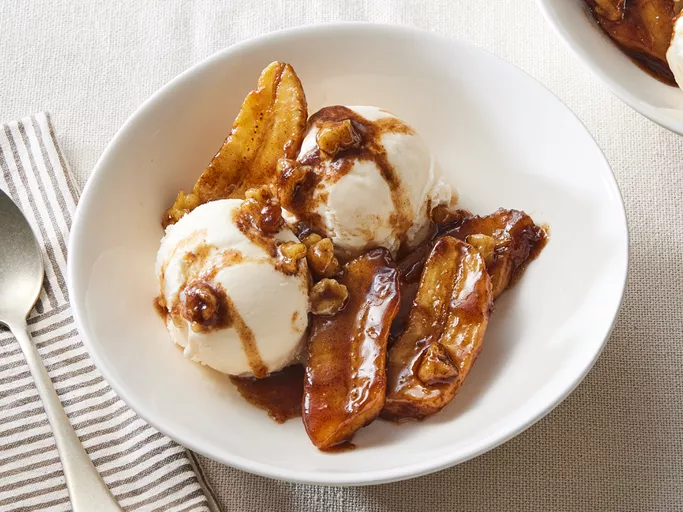

Bananas Foster

Description
Bananas foster is a dessert consisting of sliced bananas and a rum sauce
served over vanilla ice cream. It originated in New Orleans and is often
prepared tableside in restaurants as a flambé (a cooking technique in
which alcohol is added to a hot pan, creating flames).
Ingredients
- ¼ cup butter
- ⅔ cup dark brown sugar
- 3 ½ tablespoons rum
- 1 ½ teaspoons vanilla extract
- ½ teaspoon ground cinnamon
- Bananas: Of course, you'll need bananas!
- 3 bananas, peeled and sliced lengthwise and crosswise
- ¼ cup coarsely chopped walnuts
- 1 pint vanilla ice cream
Steps
- Gather all ingredients.
-
Melt butter in a large, deep skillet over medium heat. Stir in brown
sugar, rum, vanilla, and cinnamon; bring to a low boil.
-
Place bananas and walnuts in the pan. Cook until bananas have softened,
1 to 2 minutes.
- Serve at once over vanilla ice cream. Enjoy!
Home